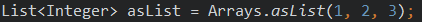
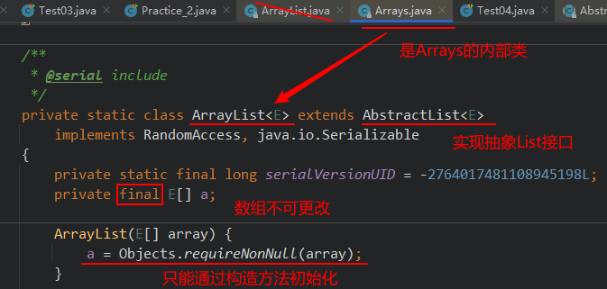
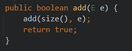
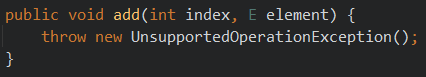

常用类API¶
1. 字符串String¶
1.1 String的特点¶
-
字符串不可变，内部存储结构为
private final char value[]在JDK9及其之后，内部使用byte[]数组
-
字符串分为字面量存储与String对象形式存储
- 字面量存储在字符串常量池中
- String对象形式存储在堆中
-
字符串类String被声明为final，不可继承
1.2 字符串的常用方法¶
1.2.1 常用方法¶
| 方法名 | 说明 |
|---|---|
| boolean isEmpty() | 字符串是否为空 |
| int length() | 返回字符串的长度 |
| String concat(xx) | 拼接，等价于+ |
| boolean equals(Object obj) | 比较字符串是否相等，区分大小写 |
| boolean equalsIgnoreCase(Object obj | 比较字符串是否相等，区分大小写 |
| int compareTo(String other) | 比较字符串大小，区分大小写，按照Unicode编码值比较大小 |
| int compareToIgnoreCase(String other) | 比较字符串大小，不区分大小写 |
| String toLowerCase() | 将字符串中大写字母转为小写 |
| String toUpperCase() | 将字符串中小写字母转为大写 |
| String trim() | 去掉字符串前后空白符 |
1.2.2 查找方法¶
| 方法名 | 说明 |
|---|---|
| boolean contains(xx) | 是否包含xx |
| int indexOf(xx) | 从前往后找当前字符串中xx，即如果有返回第一次出现的下标，要是没有返回-1 |
| int lastIndexOf(xx) | 从后往前找当前字符串中xx，即如果有返回最后一次出现的下标，要是没有返回-1 |
1.2.3 字符串截取方法¶
| 方法名 | 说明 |
|---|---|
| String substring(int beginIndex) | 返回一个新的字符串，它是此字符串的从beginIndex开始截取到最后的一个子字符串。 |
| String substring(int beginIndex, int endIndex) | 返回一个新字符串，它是此字符串从beginIndex开始截取到endIndex(不包含)的一个子字符串。 |
1.2.4 字符相关方法¶
| 方法名 | 说明 |
|---|---|
| char charAt(index) | 返回[index]位置的字符 |
| char[] toCharArray() | 将此字符串转换为一个新的字符数组返回 |
| String(char[] value) | 返回指定数组中表示该字符序列的 String。 |
| String(char[] value, int offset, int count) | 返回指定数组中表示该字符序列的 String。 |
| static String copyValueOf(char[] data) | 返回指定数组中表示该字符序列的 String |
| static String copyValueOf(char[] data, int offset, int count) | 返回指定数组中表示该字符序列的 String |
| static String valueOf(char[] data, int offset, int count) | 返回指定数组中表示该字符序列的String |
| static String valueOf(char[] data) | 返回指定数组中表示该字符序列的 String |
1.2.5 编码与解码方法¶
| 方法名 | 说明 |
|---|---|
| byte[] getBytes() | 编码，把字符串变为字节数组，按照平台默认的字符编码进行编码 |
| byte[] getBytes(字符编码方式) | 按照指定的编码方式进行编码 |
| new String(byte[] ) 或 new String(byte[], int, int) | 解码，按照平台默认的字符编码进行解码 |
| new String(byte[]，字符编码方式 ) 或 new String(byte[], int, int，字符编码方式) | 解码，按照指定的 编码方式进行解码 |
1.2.6 开头与结尾¶
| 方法名 | 说明 |
|---|---|
| boolean startsWith(xx) | 是否以xx开头 |
| boolean endsWith(xx) | 是否以xx结尾 |
1.2.7 替换¶
| 方法名 | 说明 |
|---|---|
| String replace(xx,xx) | 不支持正则 |
| String replaceFirst(正则，value) | 替换第一个匹配部分 |
| String repalceAll(正则， value) | 替换所有匹配部分 |
1.2.8 拆分¶
| 方法名 | 说明 |
|---|---|
| String[] split(正则) | 按照某种规则进行拆分 |
1.2.9 正则匹配¶
字符类
[abc] ： a 、 b 或 c （简单类）
[^abc] ：任何字符，除了 a 、 b 或 c （否定）
[a-zA-Z] ： a 到 z 或 A 到 Z ，两头的字母包括在内（范围）
预定义字符类
. ：任何字符（与行结束符可能匹配也可能不匹配）
\d ：数字： [0-9]
\D ：非数字： [^0-9]
\s ：空白字符： [ \t\n\x0B\f\r]
\S ：非空白字符： [^\s]
\w ：单词字符： [a-zA-Z_0-9]
\W ：非单词字符： [^\w]
POSIX 字符类（仅 US-ASCII）
\p{Lower} 小写字母字符：[a-z]
\p{Upper} 大写字母字符：[A-Z]
\p{ASCII} 所有 ASCII：[\x00-\x7F]
\p{Alpha} 字母字符：[\p{Lower}\p{Upper}]
\p{Digit} 十进制数字：[0-9]
\p{Alnum} 字母数字字符：[\p{Alpha}\p{Digit}]
\p{Punct} 标点符号：!"#$%&'()*+,-./:;<=>?@[]^_`{|}~
\p{Blank} 空格或制表符：[ \t]
边界匹配器
^ ：行的开头
$ ：行的结尾
Greedy 数量词
X ? ：X，一次或一次也没有
X * ：X，零次或多次
X + ：X，一次或多次
X { n } ：X，恰好 n 次
X { n ,} ：X，至少 n 次
X { n , m } ：X，至少 n 次，但是不超过 m 次
Logical 运算符
XY：X 后跟 Y
X | Y：X 或 Y
( X ) ：X，作为捕获组
特殊构造（非捕获）
(?:X) X，作为非捕获组
(?=X) X，通过零宽度的正 lookahead
(?!X) X，通过零宽度的负 lookahead
(?<=X) X，通过零宽度的正 lookbehind
(?<!X) X，通过零宽度的负 lookbehind
(?>X) X，作为独立的非捕获组
1.3 字符串的内存分析¶
- 字面量直接存储在字符串常量池中
- String对象存储在堆中
- 常量+常量：结果是常量池
- 常量与变量 或 变量与变量：结果是堆
- intern方法有jvm版本的区别，这里不再深入分析，jdk8中执行原理是如果字符串常量池有内容相同的字符串则直接返回，否则把堆中创建的字符串引用放入字符串常量池，返回此引用，总之所有版本都是通过字符串常量池返回的内容。
@Test
public void test1(){
String s1 = "hello";
String s2 = "hello";
String s3 = new String("hello");
}
@Test
public void test02(){
String s1 = "hello";
String s2 = "world";
String s3 = "helloworld";
String s4 = s1 + "world";//s4字符串内容也helloworld，s1是变量，"world"常量，变量 + 常量的结果在堆中
String s5 = s1 + s2;//s5字符串内容也helloworld，s1和s2都是变量，变量 + 变量的结果在堆中
String s6 = "hello" + "world";//常量+常量，编译期经过优化，跟s3完全相同的情况。
System.out.println(s3 == s4);//false
System.out.println(s3 == s5);//false
System.out.println(s3 == s6);//true
}
@Test
public void test03(){
final String s1 = "hello";
final String s2 = "world";
String s3 = "helloworld";
String s4 = s1 + "world";//s4字符串内容也helloworld，s1是常量，"world"常量，常量+ 常量 结果在常量池中
String s5 = s1 + s2;//s5字符串内容也helloworld，s1和s2都是常量，常量+ 常量 结果在常量池中
String s6 = "hello" + "world";//常量+ 常量 结果在常量池中，因为编译期间就可以确定结果
System.out.println(s3 == s4);//true
System.out.println(s3 == s5);//true
System.out.println(s3 == s6);//true
}
@Test
public void test04(){
String s1 = "hello";
String s2 = "world";
String s3 = "helloworld";
String s4 = (s1 + "world").intern();//如果常量池已经有“helloworld”，直接返回，否则把拼接结果的引用放到常量池中
String s5 = (s1 + s2).intern();
System.out.println(s3 == s4);//true
System.out.println(s3 == s5);//true
}
2. StringBuilder&StringBuffer¶
2.1 与String区别¶
因为String对象是不可变对象，虽然可以共享常量对象，但是对于频繁字符串的修改和拼接操作，效率极低。因此，JDK又在java.lang包提供了可变字符序列StringBuilder和StringBuffer类型。
- StringBuffer：老的，线程安全的（因为它的方法有synchronized修饰）
- StringBuilder：线程不安全的
2.2 常用API¶
常用的API，StringBuilder、StringBuffer的API是完全一致的
| 方法名 | 说明 |
|---|---|
| StringBuffer append(xx) | 拼接，追加 |
| StringBuffer insert(int index, xx) | 在[index]位置插入xx |
| StringBuffer delete(int start, int end) | 删除[start,end)之间字符 |
| StringBuffer deleteCharAt(int index) | 删除[index]位置字符 |
| void setCharAt(int index, xx) | 替换[index]位置字符 |
| StringBuffer reverse() | 反转 |
| void setLength(int newLength) | 设置当前字符序列长度为newLength |
| StringBuffer replace(int start, int end, String str) | 替换[start,end)范围的字符序列为str |
| int indexOf(String str) | 在当前字符序列中查询str的第一次出现下标 |
| int indexOf(String str, int fromIndex) | 在当前字符序列[fromIndex,最后]中查询str的第一次出现下标 |
| int lastIndexOf(String str) | 在当前字符序列中查询str的最后一次出现下标 |
| int lastIndexOf(String str, int fromIndex) | 在当前字符序列[fromIndex,最后]中查询str的最后一次出现下标 |
| String substring(int start) | 截取当前字符序列[start,最后] |
| String substring(int start, int end) | 截取当前字符序列[start,end) |
| String toString() | 返回此序列中数据的字符串表示形式 |
2.3 测试方法¶
@Test
public void test6(){
StringBuilder s = new StringBuilder("helloworld");
s.setLength(30);
System.out.println(s);
}
@Test
public void test5(){
StringBuilder s = new StringBuilder("helloworld");
s.setCharAt(2, 'a');
System.out.println(s);
}
@Test
public void test4(){
StringBuilder s = new StringBuilder("helloworld");
s.reverse();
System.out.println(s);
}
@Test
public void test3(){
StringBuilder s = new StringBuilder("helloworld");
s.delete(1, 3);
s.deleteCharAt(4);
System.out.println(s);
}
@Test
public void test2(){
StringBuilder s = new StringBuilder("helloworld");
s.insert(5, "java");
s.insert(5, "chailinyan");
System.out.println(s);
}
@Test
public void test1(){
StringBuilder s = new StringBuilder();
s.append("hello").append(true).append('a').append(12).append("atguigu");
System.out.println(s);
System.out.println(s.length());
}
3. 数字相关的类¶
3.1 Math类¶
java.lang.Math 类包含用于执行基本数学运算的方法，如初等指数、对数、平方根和三角函数。类似这样的工具类，其所有方法均为静态方法，并且不会创建对象，调用起来非常简单。
| 名称 | 说明 |
|---|---|
| public static final double PI | 返回圆周率 |
| public static double abs(double a) | 返回 double 值的绝对值。 |
| public static double ceil(double a) | 返回大于等于参数的最小的整数。 |
| public static double floor(double a) | 返回小于等于参数最大的整数。 |
| public static long round(double a) | 返回最接近参数的 long。(相当于四舍五入方法) |
| public static double pow(double a,double b) | 返回a的b幂次方法 |
| public static double sqrt(double a) | 返回a的平方根 |
| public static double random() | 返回[0,1)的随机值 |
| public static double max(double x, double y) | 返回x,y中的最大值 |
| public static double min(double x, double y) | 返回x,y中的最小值 |
3.1.1 测试代码¶
// 圆周率
double pi = Math.PI;
// 返回 double 值的绝对值。
double d1 = Math.abs(-5); //d1的值为5
double d2 = Math.abs(5); //d2的值为5
// 返回大于等于参数的最小的整数。
double d1 = Math.ceil(3.3); //d1的值为 4.0
double d2 = Math.ceil(-3.3); //d2的值为 -3.0
double d3 = Math.ceil(5.1); //d3的值为 6.0
// 返回小于等于参数最大的整数。
double d1 = Math.floor(3.3); //d1的值为 3.0
double d2 = Math.floor(-3.3); //d2的值为 -4.0
double d3 = Math.floor(5.1); //d3的值为 5.0
// 返回最接近参数的 long。(相当于四舍五入方法)
long d1 = Math.round(5.5); //d1的值为6.0
long d2 = Math.round(5.4); //d2的值为5.0
// 其他测试
double result = Math.pow(2,31); // 平方
double sqrt = Math.sqrt(256); // 开放
double rand = Math.random(); // [0,1)的随机数
3.2 随机数类 java.util.Random¶
说明：用于产生随机数（只能产生伪随机数）
| 名称 | 说明 |
|---|---|
| public Random() | 构造器类，默认种子为系统时间 |
| public Random(long seed) | 使用单个 long 种子创建一个新的随机数生成器。相同种子产生的随机数相同 |
| boolean nextBoolean() | 返回均匀分布的boolean值 |
| void nextBytes(byte[] bytes) | 生成随机字节并将其置于用户提供的 byte 数组中 |
| double nextDouble() | 返回0.0 和 1.0 之间均匀分布的 double 值 |
| float nextFloat() | 0.0 和 1.0 之间均匀分布的 float 值 |
| double nextGaussian() | 高斯（“正态”）分布的 double 值，其平均值是 0.0，标准差是 1.0 |
| int nextInt() | 返回随机数生成器的序列中均匀分布的 int 值 |
| int nextInt(int n) | 在 0（包括）和指定值（不包括）之间均匀分布的 int 值 [0,n) |
| long nextLong() | 返回随机数生成器序列的均匀分布的 long 值 |
3.2.1 测试代码¶
@Test
public void test03(){
Random r = new Random();
System.out.println("随机整数：" + r.nextInt());
System.out.println("随机小数：" + r.nextDouble());
System.out.println("随机布尔值：" + r.nextBoolean());
}
3.3 BigInteger¶
说明：不可变的任意精度的整数。
| 名称 | 说明 |
|---|---|
| BigInteger(String val) | 创建一个BigInteger |
| BigInteger add(BigInteger val) | 相加 |
| BigInteger subtract(BigInteger val) | 相减 |
| BigInteger multiply(BigInteger val) | 相乘 |
| BigInteger divide(BigInteger val) | 相除 |
| BigInteger remainder(BigInteger val) | 余数 |
| int intValue() | 将此 BigInteger 转换为 int。 |
| long longValue() | 将此 BigInteger 转换为 long。 |
| float floatValue() | 将此 BigInteger 转换为 float。 |
@Test
public void test01(){
// long bigNum = 123456789123456789123456789L;
BigInteger b1 = new BigInteger("123456789123456789123456789");
BigInteger b2 = new BigInteger("78923456789123456789123456789");
// System.out.println("和：" + (b1+b2));//错误的，无法直接使用+进行求和
System.out.println("和：" + b1.add(b2));
System.out.println("减：" + b1.subtract(b2));
System.out.println("乘：" + b1.multiply(b2));
System.out.println("除：" + b2.divide(b1));
System.out.println("余：" + b2.remainder(b1));
}
3.4 BigDecimal¶
说明：不可变的、任意精度的有符号十进制数。
| 名称 | 说明 |
|---|---|
| BigDecimal(String val) | 定义一个BigDecimal |
| BigDecimal add(BigDecimal val) | 相加 |
| BigDecimal subtract(BigDecimal val) | 相减 |
| BigDecimal multiply(BigDecimal val) | 相乘 |
| BigDecimal divide(BigDecimal val) | 相除 |
| BigDecimal divide(BigDecimal divisor, int roundingMode) | 相除，四舍五入模式 |
| BigDecimal remainder(BigDecimal val) | 余数 |
| double doubleValue() | 将此 BigDecimal 转换为 double。 |
@Test
public void test02(){
/*double big = 12.123456789123456789123456789;
System.out.println("big = " + big);*/
BigDecimal b1 = new BigDecimal("123.45678912345678912345678912345678");
BigDecimal b2 = new BigDecimal("7.8923456789123456789123456789998898888");
// System.out.println("和：" + (b1+b2));//错误的，无法直接使用+进行求和
System.out.println("和：" + b1.add(b2));
System.out.println("减：" + b1.subtract(b2));
System.out.println("乘：" + b1.multiply(b2));
System.out.println("除：" + b1.divide(b2,20,RoundingMode.UP));//divide(BigDecimal divisor, int scale, int roundingMode)
System.out.println("除：" + b1.divide(b2,20,RoundingMode.DOWN));//divide(BigDecimal divisor, int scale, int roundingMode)
System.out.println("余：" + b1.remainder(b2));
}
4. 日期时间API¶
4.1 日期类java.util.Date¶
4.1.1 常用API¶
| 名称 | 说明 |
|---|---|
| new Date() | 当前系统时间 |
| long getTime() | 返回该日期时间对象距离1970-1-1 0.0.0 0毫秒之间的毫秒值 |
| new Date(long 毫秒) | 把该毫秒值换算成日期时间对象（从1970年开始） |
@Test
public void test5(){
long time = Long.MAX_VALUE;
Date d = new Date(time);
System.out.println(d);
}
@Test
public void test4(){
long time = 1559807047979L;
Date d = new Date(time);
System.out.println(d);
}
@Test
public void test3(){
Date d = new Date();
long time = d.getTime();
System.out.println(time);//1559807047979
}
@Test
public void test2(){
long time = System.currentTimeMillis();
System.out.println(time);//1559806982971
//当前系统时间距离1970-1-1 0:0:0 0毫秒的时间差，毫秒为单位
}
@Test
public void test1(){
Date d = new Date();
System.out.println(d);
}
4.2 日历类java.util.Calendar¶
Calendar 类是一个抽象类，它为特定瞬间与一组诸如 YEAR 、 MONTH 、 DAY_OF_MONTH 、 HOUR 等日历字段 之间的转换提供了一些方法，并为操作日历字段（例如获得下星期的日期）提供了一些方法。
4.2.1 常用API¶
| 名称 | 描述 |
|---|---|
| #Calendar.getInstance() | 得到Calendar当前时间的Calendar实例 |
| #Calendar.getInstance(Time Zone) | 根据时区获得Calendar实例 |
| Obj.get(常量) | 获取特定值 |
其中，常量为：
calendar.get(Calendar.MONDAY);
calendar.get(Calendar.DAY_OF_MONTH);
calendar.get(Calendar.DAY_OF_WEEK);
calendar.get(Calendar.DAY_OF_YEAR);
calendar.get(Calendar.SECOND);
设置时区
@Test
public void test7(){
TimeZone t = TimeZone.getTimeZone("America/Los_Angeles");
//getInstance(TimeZone zone)
Calendar c = Calendar.getInstance(t);
System.out.println(c);
}
4.3 简单格式化java.text.SimpleDateFormat¶
说明：SimpleDateFormat用于日期时间的格式化。
4.3.1 简单使用¶
@Test
public void test1() throws ParseException {
// 获取 SimpleDateFormat对象，并指定模板
DateFormat dateFormat = new SimpleDateFormat("YYYY/MM/dd hh:mm:ss");
// 根据模板 格式化当前时间
String afterFormat = dateFormat.format(new Date());
// 输出查看
System.out.println("格式化后：" + afterFormat);
// 定义需要解析的字符串
String dateStr = "2020/10/18";
// 获取 SimpleDateFormat对象，并指定模板
DateFormat df2 = new SimpleDateFormat("YYYY/MM/dd");
// 解析字符串日期 此处有异常，需要处理或抛出
Date parse = df2.parse(dateStr);
// 输出查看
System.out.println("parse = " + parse);
}
4.3.2 格式化模板简介¶
模板可以指定日期格式化或解析的格式，模板的语法如下：

5. JDK8之后日期类说明¶
Java 8 吸收了 Joda-Time （第三方开发）的精华，以一个新的开始为 Java 创建优秀的 API。
- java.time – 包含值对象的基础包
- java.time.chrono – 提供对不同的日历系统的访问。
- java.time.format – 格式化和解析时间和日期
- java.time.temporal – 包括底层框架和扩展特性
- java.time.zone – 包含时区支持的类
Java 8 吸收了 Joda-Time 的精华，以一个新的开始为 Java 创建优秀的 API。新的java.time 中包含了所有关于时钟（Clock），本地日期（LocalDate）、本地时间（LocalTime）、本地日期时间（LocalDateTime）、时区（ZonedDateTime）和持续时间（Duration）的类。
5.1 LocalDate、LocalTime、LocalDateTime¶
5.1.1 常用API¶
| 方法 | 描述 |
|---|---|
| #LocalDate.now() / #LocalDate.now(ZoneId zone) | 静态方法，根据当前时间创建对象/指定时区的对象 |
| LocalDate.of() | 静态方法，根据指定日期/时间创建对象 |
| obj.getDayOfMonth()/getDayOfYear() | 获得月份天数(1-31) /获得年份天数(1-366) |
| obj.getDayOfWeek() | 获得星期几(返回一个 DayOfWeek 枚举值) |
| obj.getMonth() | 获得月份, 返回一个 Month 枚举值 |
| obj.getMonthValue() / getYear() | 获得月份(1-12) /获得年份 |
| obj.getHours()/getMinute()/getSecond() | 获得当前对象对应的小时、分钟、秒 |
| obj.withDayOfMonth()/withDayOfYear()/withMonth()/withYear() | 将月份天数、年份天数、月份、年份修改为指定的值并返回新的对象 |
| obj.with(TemporalAdjuster t) | 将当前日期时间设置为校对器指定的日期时间 |
| obj.plusDays(), plusWeeks(), plusMonths(), plusYears(),plusHours() | 向当前对象添加几天、几周、几个月、几年、几小时 |
| obj.minusMonths() / minusWeeks()/minusDays()/minusYears()/minusHours() | 从当前对象减去几月、几周、几天、几年、几小时 |
| obj.plus(TemporalAmount t)/minus(TemporalAmount t) | 添加或减少一个 Duration 或 Period |
| obj.isBefore()/isAfter() | 比较两个 LocalDate |
| obj.isLeapYear() | 判断是否是闰年（在 LocalDate类中声明） |
| obj.format(DateTimeFormatter t) | 格式化本地日期、时间，返回一个字符串 |
| obj.parse(Charsequence text) | 将指定格式的字符串解析为日期、时间 |
获取时间、设置时间
@Test
public void test01(){
LocalDate now = LocalDate.now();
System.out.println(now);
}
@Test
public void test02(){
LocalTime now = LocalTime.now();
System.out.println(now);
}
@Test
public void test03(){
LocalDateTime now = LocalDateTime.now();
System.out.println(now);
}
@Test
public void test04(){
LocalDate lai = LocalDate.of(2019, 5, 13);
System.out.println(lai);
}
@Test
public void test05(){
LocalDate lai = LocalDate.of(2019, 5, 13);
System.out.println(lai.getDayOfYear());
}
@Test
public void test06(){
LocalDate lai = LocalDate.of(2019, 5, 13);
LocalDate go = lai.plusDays(160);
System.out.println(go);//2019-10-20
}
@Test
public void test7(){
LocalDate now = LocalDate.now();
LocalDate before = now.minusDays(100);
System.out.println(before);//2019-02-26
}
5.2 DateTimeFormatter¶
格式化时间：DateTimeFormatter
5.2.1 使用格式¶
// 获取格式化模板
DateTimeFormatter dateFormat = DateTimeFormatter.ofPattern(String patternStr);
// 格式化
dateFormat.format(LocalDateTime now);
// 解析
dateFormat.parse(String dateTime);
格式化测试
@Test
public void testFormat(){
// 获取当前时间
LocalDateTime now = LocalDateTime.now();
// 根据模板获取 DateTimeFormatter对象
DateTimeFormatter dateFormat = DateTimeFormatter.ofPattern("YYYY-MM-dd HH:mm:ss");
// 格式化，并输出查看
System.out.println("dateFormat.format(now) = " + dateFormat.format(now));
}
/*解析结果
dateFormat.format(now) = 2020-09-09 16:54:35
*/
解析测试
@Test
public void testParse(){
// 根据模板获取 DateTimeFormatter对象
DateTimeFormatter dateFormat = DateTimeFormatter.ofPattern("YYYY-MM-dd HH:mm:ss");
// TemporalAccessor 为接口，LocalDateTime为其实现类
TemporalAccessor parse = dateFormat.parse("1997-10-18 21:30:21");
// 输出并查看解析情况
System.out.println("parse = " + parse);
}
/*执行结果
parse = {WeekBasedYear[WeekFields[SUNDAY,1]]=1997, DayOfMonth=18, MonthOfYear=10},ISO resolved to 21:30:21
*/
5.3 ZonedDateTime¶
指定时区日期时间：ZonedDateTime
| 常见时区ID | 地区 |
|---|---|
| Asia/Shanghai | 中国上海 （东八区） |
| UTC | 格林标准时间 |
| America/New_York | 美国纽约 |
示例代码
import java.time.ZoneId;
import java.time.ZonedDateTime;
public class TestZonedDateTime {
public static void main(String[] args) {
// 获取当前时区的 ZonedDateTime
ZonedDateTime t = ZonedDateTime.now();
System.out.println(t);
// 获取指定时区的 ZonedDateTime
ZonedDateTime t1 = ZonedDateTime.now(ZoneId.of("America/New_York"));
System.out.println(t1);
}
}
5.4 Period和Duration¶
持续日期/时间：Period和Duration
5.4.1 Period:用于计算两个“日期”间隔¶
public static void main(String[] args) {
LocalDate t1 = LocalDate.now();
LocalDate t2 = LocalDate.of(2018, 12, 31);
Period between = Period.between(t1, t2);
System.out.println(between);
System.out.println("相差的年数："+between.getYears());//1年
System.out.println("相差的月数："+between.getMonths());//又7个月
System.out.println("相差的天数："+between.getDays());//零25天
System.out.println("相差的总数："+between.toTotalMonths());//总共19个月
}
5.4.2 Duration:用于计算两个“时间”间隔¶
public static void main(String[] args) {
LocalDateTime t1 = LocalDateTime.now();
LocalDateTime t2 = LocalDateTime.of(2017, 8, 29, 0, 0, 0, 0);
Duration between = Duration.between(t1, t2);
System.out.println(between);
System.out.println("相差的总天数："+between.toDays());
System.out.println("相差的总小时数："+between.toHours());
System.out.println("相差的总分钟数："+between.toMinutes());
System.out.println("相差的总秒数："+between.getSeconds());
System.out.println("相差的总毫秒数："+between.toMillis());
System.out.println("相差的总纳秒数："+between.toNanos());
System.out.println("不够一秒的纳秒数："+between.getNano());
}
6. 系统相关类¶
6.1 java.lang.System类¶
系统类中很多好用的方法，其中几个如下： static long currentTimeMillis() ：返回当前系统时间距离1970-1-1 0:0:0的毫秒值
static void exit(int status) ：退出当前系统
static void gc() ：运行垃圾回收器。
static String getProperty(String key)：获取某个系统属性
案例演示
static long currentTimeMillis()
@Test
public void test1(){
System.out.println("System.currentTimeMillis() = " + System.currentTimeMillis());
}
/*运行结果
System.currentTimeMillis() = 1599644230160
*/
static void exit(int status)
@Test
public void test2(){
System.out.println("执行exit之前");
System.exit(0);
System.out.println("执行exit之后");
}
/*运行结果：
执行exit之前
Process finished with exit code 100
*/
static void gc()
说明：粗略版解释，在对象被回收之前会且仅会执行一次finalize()方法
@Test
public void test3() {
class Person {
private String name;
public Person(String name) {
this.name = name;
}
@Override
protected void finalize() throws Throwable {
super.finalize();
System.out.println(this.name + "被回收了。");
}
}
new Person("张三");
System.gc();
}
/*执行结果：
张三被回收了。
*/
static String getProperty(String key)
@Test
public void test4(){
String version = System.getProperty("os.version");
String username = System.getProperty("user.name");
System.out.println("version = " + version);
System.out.println("username = " + username);
}
/*执行结果
version = 10.0
username = LeoNardo
*/
6.2 java.lang.Runtime类¶
Runtime类封装了运行时的环境。每个 Java 应用程序都有一个 Runtime 类实例，使应用程序能够与其运行的环境相连接。 一般不能实例化一个Runtime对象，应用程序也不能创建自己的 Runtime 类实例，但可以通过 getRuntime 方法获取当前Runtime运行时对象的引用。
一旦得到了一个当前的Runtime对象的引用，就可以调用Runtime对象的方法去控制Java虚拟机的状态和行为。
注意：当Applet和其他不被信任的代码调用任何Runtime方法时，常常会引起SecurityException异常。
6.2.1 相关方法¶
public static Runtime getRuntime()： 返回与当前 Java 应用程序相关的运行时对象。
public long totalMemory()：返回 Java 虚拟机中的内存总量。此方法返回的值可能随时间的推移而变化，这取决于主机环境。
public long freeMemory()：回 Java 虚拟机中的空闲内存量。调用 gc 方法可能导致 freeMemory 返回值的增加。
Process exec(String command):在单独的进程中执行指定的字符串命令。
public int availableProcessors()：返回 Java 虚拟机中可用CPU的个数
实例代码
@Test
public void test5() throws IOException {
// 获取Runtime实例
Runtime runtime = Runtime.getRuntime();
// 获取虚拟机总内存
System.out.println("runtime.totalMemory() = " + runtime.totalMemory());
// 获取虚拟机的空闲内存
System.out.println("runtime.freeMemory() = " + runtime.freeMemory());
// 获取虚拟机可用cpu个数
System.out.println("runtime.availableProcessors() = " + runtime.availableProcessors());
// 执行命令行操作（此处为打开记事本），有异常需要处理
runtime.exec("notepad");
}
/*运行结果
runtime.totalMemory() = 257425408
runtime.freeMemory() = 248029584
runtime.availableProcessors() = 4
-------------------------------------------
打开了记事本
*/
7. 数组、集合数组、集合工具类¶
7.1 数组工具类¶
java.util.Arrays数组工具类，提供了很多静态方法来对数组进行操作，而且如下每一个方法都有各种重载形式，以下只列出int[]类型的，其他类型的数组类推：
| 方法名 | 简介 |
|---|---|
| static int binarySearch(int[] a, int key) | 要求数组有序，在数组中查找key是否存在，如果存在返回第一次找到的下标，不存在返回负数 |
| static int[] copyOf(int[] original, int newLength) | 根据original原数组复制一个长度为newLength的新数组，并返回新数组 |
| static int[] copyOfRange(int[] original, int from, int to) | 复制original原数组的[from,to)构成新数组，并返回新数组 |
| static boolean equals(int[] a, int[] a2) | 比较两个数组的长度、元素是否完全相同 |
| static void fill(int[] a, int val) | 用val填充整个a数组 |
| static void fill(int[] a, int fromIndex, int toIndex, int val) | 将a数组[fromIndex,toIndex)部分填充为val |
| static void sort(int[] a) | 将a数组按照从小到大进行排序 |
| static void sort(int[] a, int fromIndex, int toIndex) | 将a数组的[fromIndex, toIndex)部分按照升序排列 |
| static String toString(int[] a) | 把a数组的元素，拼接为一个字符串，形式为：[元素1，元素2，元素3。。。] |
| static List\ |
把传入的元素组成一个List返回 |
示例代码：
@Test
public void test1() {
int[] arr = new int[5];
// 打印数组,输出地址值
System.out.println(arr);
// 数组内容转为字符串
System.out.println("arr数组初始状态：" + Arrays.toString(arr));
// 填充数组
Arrays.fill(arr, 3);
System.out.println("arr数组现在状态：" + Arrays.toString(arr));
Random rand = new Random();
for (int i = 0; i < arr.length; i++) {
arr[i] = rand.nextInt(100);//赋值为100以内的随机整数
}
System.out.println("arr数组现在状态：" + Arrays.toString(arr));
// 数组复制
int[] arr2 = Arrays.copyOf(arr, 10);
System.out.println("新数组：" + Arrays.toString(arr2));
// 数组比较
System.out.println("两个数组的比较结果：" + Arrays.equals(arr, arr2));
// 数组排序
Arrays.sort(arr);
System.out.println("arr数组现在状态：" + Arrays.toString(arr));
// 快速返回数组
List<Integer> integers = Arrays.asList(1, 2, 3, 4, 5);
integers.forEach(o->{System.out.print(o + " ");});
}
/*执行结果
[I@4ee285c6
arr数组初始状态：[0, 0, 0, 0, 0]
arr数组现在状态：[3, 3, 3, 3, 3]
arr数组现在状态：[68, 72, 7, 21, 37]
新数组：[68, 72, 7, 21, 37, 0, 0, 0, 0, 0]
两个数组的比较结果：false
arr数组现在状态：[7, 21, 37, 68, 72]
1 2 3 4 5
*/
7.2 List Arrays.asList(T...a)解析¶
作用：返回一个固定长度的List
有这么一段代码
@Test
public void testAsList() {
List<Integer> asList = Arrays.asList(1, 2, 3);
asList.add(123);
}
报错：java.lang.UnsupportedOperationException
7.2.1 内部实现原理剖析¶
从入口开始
- 进入asList方法内部，可以发现返回类一个ArrayList<>(a)

- 下图是关于Arrays.ArrayList的描述

- 探索之后发现，该内部类没有实现add接口，因此根据继承往上找：点进AbstractList\
类，发现有add()方法。

- 进入其重载方法add(size(), e);

直接抛出不支持的操作异常（UnsupportedOperationException）
官方描述：This implementation always throws an {@code UnsupportedOperationException}.（该类的实现总是抛出不支持操作异常）
分析：可能由于该类只用于返回固定大小长度的数组操作，因此不支持增删改等操作。
7.3 集合工具类¶
7.3.1 排序操作（主要针对List接口相关）¶
| 方法名 | 简述 |
|---|---|
| reverse(List list) | 反转指定List集合中元素的顺序 |
| shuffle(List list) | 对List中的元素进行随机排序(洗牌) |
| sort(List list) | 对List里的元素根据自然升序排序 |
| sort(List list,Comparator c) | 自定义比较器进行排序 |
| swap(List list,int i,int j) | 将指定List集合中i 处元素和j 处元素进行交换 |
| rotate(List list,int distance) | 将所有元素向右移位指定长度，如果distance等于size那么结果不变 |
7.3.2 查找和替换（主要针对Collection接口相关）¶
| 方法名 | 简述 |
|---|---|
| binarySearch(List list,Object key) | 使用二分法查找，以获得指定对象在List中的索引，前提是集合已经排序 |
| max(Collection coll) | 返回最大元素 |
| max(Collection coll,Comparator comp) | 根据自定义比较器，返回最大元素 |
| min(Collection] coll) | 返回最小元素 |
| min(Collection coll,Comparator comp) | 根据自定义比较器，返回最小元素 |
| fill(List list,Object obj) | 使用指定对象填充 |
| frequency(Collection Object obj) | 返回指定集合中指定对象出现的次数 |
| replaceAll(List list,Object old,Object new) | 替换 |
7.3.2 同步控制¶
Collections工具类提供了多个synchronizedXxx方法，该方法返回指定集合对象对应的同步对象，从而解决多线程并发访问集合时线程的安全问题。
HashSet、ArrayList、HashMap都是线程不安全的，如果需要考虑同步，则使用这些方法。这些方法主要有：
synchronizedSet、synchronizedSortedSet、synchronizedList、synchronizedMap、synchronizedSortedMap
特别需要注意：在使用迭代方法遍历集合时需要手工同步返回的集合。{否则会有线程安全的问题}
7.3.3 设置不可变得结合¶
|Collections工具类有三种方法返回一个不可变集合|
| 方法名 | 简述 |
|---|---|
| emptyXxx() | 返回一个空的不可变的集合对象 |
| singletonXxx() | 返回一个只包含指定对象的，不可变的集合对象 |
| unmodifiableXxx() | 返回指定集合对象的不可变视图 |
7.3.4 其它¶
| 方法名 | 简述 |
|---|---|
| disjoint(Collections\<?>c1,Collections<?>c2) | 如果两个指定collection中没有相同的元素，则返回true |
| addAll(Collection<?super T>c,T...a) | 一种方便的方式将所有指定元素添加到指定collection中 |
| Comparator\ |
返回一个比较器，它强行反转指定比较器的顺序。如果指定比较器为null，则此方法等同于reverseOrder(){返回一个比较器，它对实现Comparable接口的对象集合施加了 自然排序的相反} |
| boolean retainAll(Collection<?> coll) | 调用方保留两个集合的交集 |
| Object[] toArray() | 返回包含当前集合中所有元素的数组 |
8. 包装类¶
8.1 包装类特点¶
Java提供了两大类数据类型，基本类型与引用类型，使用基本类型在于效率，但是缺少像引用数据类型一样的丰富API，那么Java提供了针对基本数据类型的保证类，以提供更加便捷的操作功能，包装类就是把基本数据类型包装成对应的引用数据类型。
| 序号 | 基本数据类型 | 包装类（java.lang包） |
|---|---|---|
| 1 | byte | Byte |
| 2 | short | Short |
| 3 | int | Integer |
| 4 | long | Long |
| 5 | float | Float |
| 6 | double | Double |
| 7 | char | Character |
| 8 | boolean | Boolean |
| 9 | void | Void |
8.2 装箱与拆箱¶
装箱：基本数据类型转化为包装类对象
转为包装类的对象，是为了使用专门为对象设计的API和特性
Integer i1 = new Integer(4);//使用构造函数函数
Integer i2 = Integer.valueOf(4);//使用包装类中的valueOf方法
拆箱：包装类对象转化为基本数据类型
转为基本数据类型，一般是因为需要运算，Java中的大多数运算符是为基本数据类型设计的。比较、算术等
Integer i1 = new Integer(4);
int num1 = i1.intValue();
JDK1.5之后，可以自动装箱与拆箱。
8.3 包装类的常用API¶
8.3.1 基本数据类型和字符串之间的转换¶
- 基本数据类型 ==> 字符串
Integer i=10;
//方式一：
String str = i + "";
//方式二：
String str = String.valueOf(i);
//方式三：
String str=i.toString();
- 字符串 ==> 基本数据类型
使用字符串类的静态方法 String.parseXxx(Source);
| 方法名 | 简介 |
|---|---|
| public static int parseInt(String s) | 将字符串参数转换为对应的int基本类型。 |
| public static long parseLong(String s) | 将字符串参数转换为对应的long基本类型。 |
| public static double parseDouble(String s) | 将字符串参数转换为对应的double基本类型。 |
示例代码
int a = Integer.parseInt("整数的字符串");
double d = Double.parseDouble("小数的字符串");
boolean b = Boolean.parseBoolean("true或false");
int a = Integer.valueOf("整数的字符串");
double d = Double.valueOf("小数的字符串");
boolean b = Boolean.valueOf("true或false");
8.3.2 数据类型的最大最小值¶
包装类静态方法，Xxx.MAX_VALUE / Xxx.MIN_VALUE
Integer.MAX_VALUE和Integer.MIN_VALUE
Long.MAX_VALUE和Long.MIN_VALUE
Double.MAX_VALUE和Double.MIN_VALUE
8.3.3 字符转大小写¶
Character.toUpperCase('x');
Character.toLowerCase('X');
8.3.4 整数转进制¶
Integer.toBinaryString(int i)
Integer.toHexString(int i)
Integer.toOctalString(int i)
8.3.5 包装类对象的缓存问题¶
装类的数据在缓存数值范围内时，直接从内存中取出对象（内存引用地址相同），超过范围会创建新的对象
| 包装类 | 缓存对象 |
|---|---|
| Byte | -128~127 |
| Short | -128~127 |
| Integer | -128~127 |
| Long | -128~127 |
| Float | 没有 |
| Double | 没有 |
| Character | 0~127 |
| Boolean | true和false |
示例代码
@Test
public void testBuffer01() {
// 在缓存范围内
Integer i = 1;
Integer j = 1;
System.out.println("i==j ? " + (i == j));
// i==j ? true
}
@Test
public void testBuffer02() {
// 超出缓存范围
Integer i = 128;
Integer j = 128;
System.out.println("i==j ? " + (i == j));
// i==j ? false
}
@Test
public void testBuffer03() {
Integer i = new Integer(1);//新new的在堆中
Integer j = 1;//这个用的是缓冲的常量对象，在方法区
System.out.println(i == j);//false
}
@Test
public void testBuffer04() {
Integer i = new Integer(1);//新new的在堆中
Integer j = new Integer(1);//另一个新new的在堆中
System.out.println(i == j);//false
}
8.4 不可变对象¶
说明：包装类对象是“不可变”对象，即一旦修改，就是新对象
8.4.1 案例说明¶
@Test
public void testUnchangable() {
Integer num = 100;
System.out.println("调用change之前的value: " + num);
change(num);
System.out.println("调用change之后的value: " + num);
}
public void change(Integer num) {
System.out.println("改变Integer的值之前的value: " + num);
num = 0;
System.out.println("改变Integer的值之后的value: " + num);
}
/*执行结果
调用change之前的value: 100
改变Integer的值之前的value: 100
改变Integer的值之后的value: 0
调用change之后的value: 100
*/
本文总阅读量次